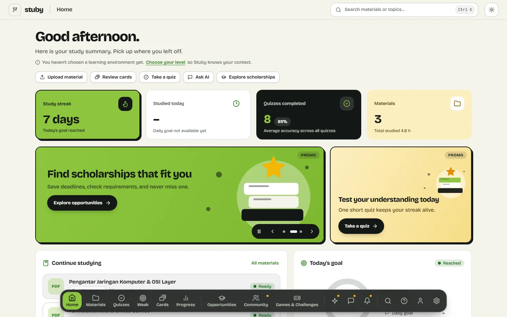
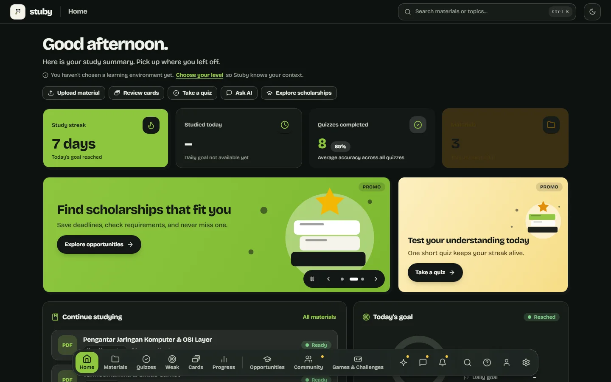
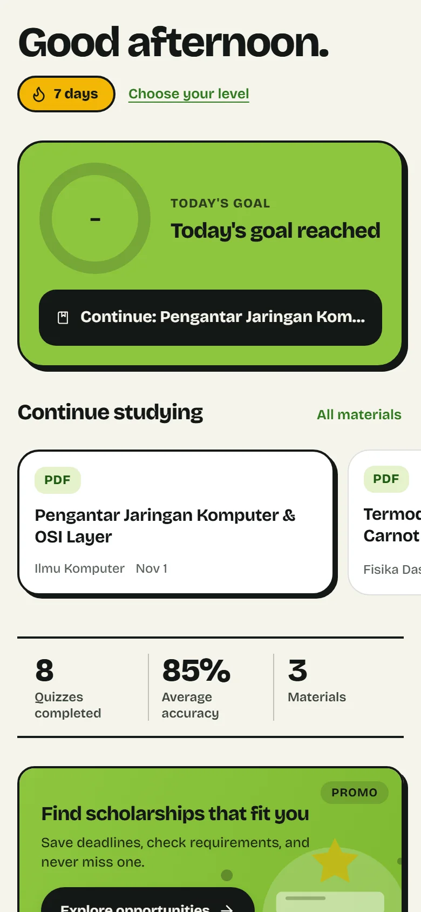
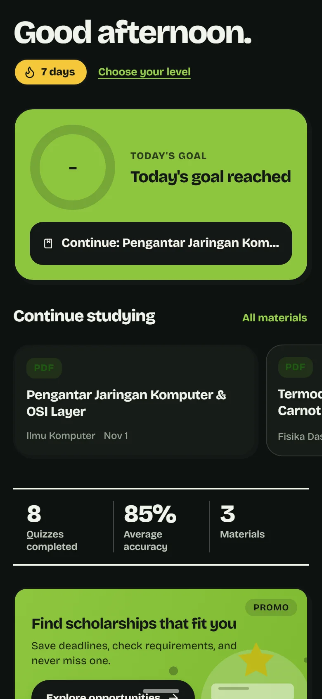
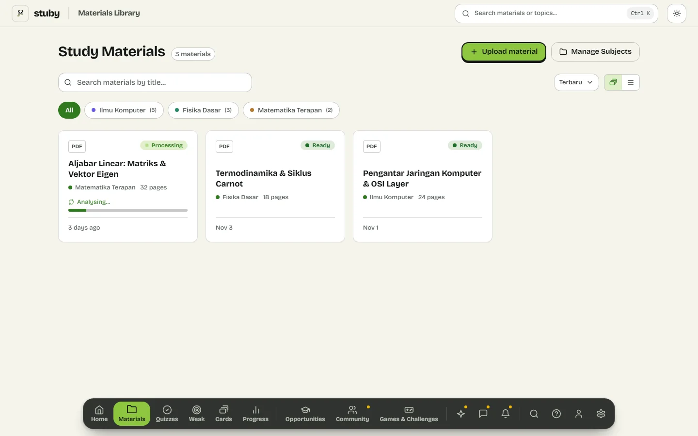
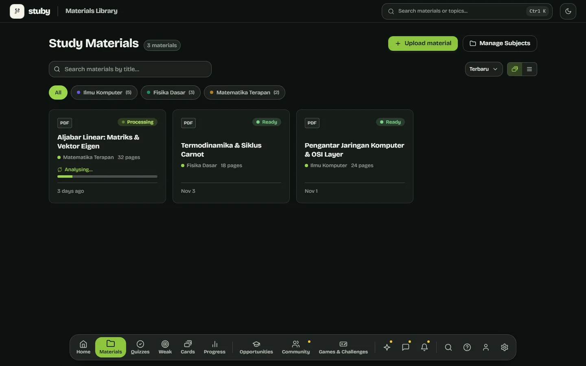
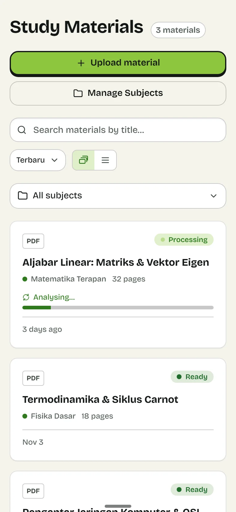
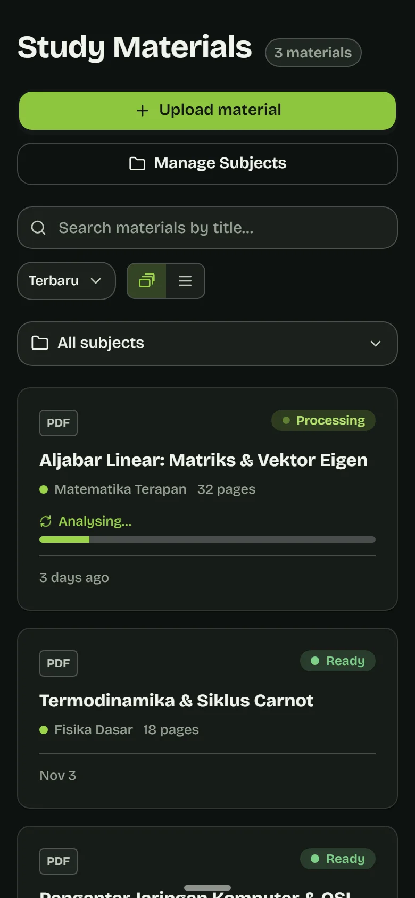

Teach-back
Explain the concept in your own words. An AI student asks pointed questions, then scores your explanation against a rubric.
AI studentWait, why does the cold side matter at all?
Stuby reads your PDFs, slides and notes, builds notes, a mind map, quizzes, flashcards and games from them, and keeps score of what you actually know.




Screens are real captures of the app running on its built-in fictional demo data.
The study loop
Pick a stage. The examples come from a sample thermodynamics PDF, so you can see the same material change shape.


Upload PDF, DOCX, PPTX, images, TXT or Markdown. A background pipeline extracts the text, reads image-only pages with a vision model and splits long documents into chunks. If one chunk fails, only that chunk is retried; the rest is not redone.
While it works, the card shows Processing with a progress bar, as in the screenshot.
You selected a line and asked: why does a colder exhaust help?
The ratio Tc/Th shrinks as the cold side gets colder, so 1 − Tc/Th grows. That is why exhaust temperature matters so much for engine efficiency.
General styles (concise, Cornell, simple) and detailed ones (Sentence, Charting, Outline, Worked Examples). Output is Markdown with LaTeX math and code cards. You can edit it, download it or regenerate it.
Select any text in a note to ask about it, or open the chat for the whole document. Answers stream in and the history is kept.
The map is an AI-built concept tree with cross-links. Pan, zoom, collapse branches, switch to a list view, export to SVG or PNG, and jump from any node back to the note it came from.
Multiple choice, true or false and short answer, spread evenly across the material, with the source page or slide cited on each question. Practice mode gives instant feedback. Exam mode adds a timer, grades only on submit and survives a reload.
Short answers are graded locally first; AI steps in only when the match is uncertain. Anything you last got wrong goes into a Weak questions queue to review.
Space or click to flip
Review done.
Cards follow the SM-2 spaced-repetition schedule: what you know appears less and less often, what you struggle with returns. Grading a card Again puts it back in the queue; any other grade sends it away until it is due.
Cards are built from concepts and games, so a weak concept in a game lands here on its own. Export everything as an Anki-compatible TSV.
Activity, last 20 weeks
A daily streak with freezes, a 20-week activity map, a weekly goal, scores per quiz and topic, and study time. A day counts toward your streak when you reach the daily goal or finish one quiz.
Each concept gets a mastery score that is updated from different kinds of evidence. It counts as mastered only with enough, varied proof.
Games
Every game is generated from your material. The server is the referee: answer keys never reach your browser before a turn is judged, and AI output is treated as untrusted.
Explain the concept in your own words. An AI student asks pointed questions, then scores your explanation against a rubric.
One or two sentences in a convincing explanation are wrong. Find them.
Tap the sentence you think is wrong.
A story that forks, with three lives. Each obstacle is a challenge taken from your material.
Choose what to do in a realistic scenario, then explain why you chose it.
Quick questions you can answer one-handed. Fits in five to ten minutes.
A cross-topic exam with no hints and no feedback until the very end, closed with a report card.
Honest data
If you have not studied yet, a tracker that prints 0% is telling you something false: that you tried and failed. Stuby shows a dash and says what is missing.
The right-hand tile is taken from the app. It appears when no daily goal exists, instead of a made-up number.
The same rule runs through mastery. A concept's score is built from different kinds of evidence, and it only counts as mastered with enough, varied proof.
What Stuby never shows
What it shows instead
Your level, your language
Choose your learning level, from primary school to professional, and the copy, pacing and suggestions adapt. Scholarships and competitions that match your level appear with their deadlines, and you can save the ones you want.
The interface comes in four languages. Pick one here to see the real strings from the app's home screen.
Choose your level
Continue studying
Strings copied from the app's translation table.
On your phone
The phone layout is its own design, not the desktop grid squeezed narrow: one focal card for today, a sideways scroller, a plain stat strip.
Navigation is five tabs. Tap to go. Hold a tab and the related pages rise out of it; slide onto one and release to open it. Try it on the dock below: press and hold a tab, or focus it and press the up arrow.
Hold a tab to see more pages.
A sun dot marks pages that are visible but not built yet.


Run it
There are no installers to download yet. You build Stuby from source, and the repository has the setup guides.
Windows, macOS and Linux. The app starts its own server on a loopback port and shows it, so there is nothing to launch first. The first run asks for a database address and a password.
Build from sourceOne script builds and installs a hardened systemd service. Put Caddy in front for HTTPS and open it from any browser.
Build from sourceA Tauri shell that loads the UI from your server's address, so session cookies stay on a single origin.
Build from sourceNot built yet.
Not availableOpens the whole interface in your browser with fictional data. No database, no server.
npm install
npm run dev:mockNeeds Rust, Node.js 22 or newer and a PostgreSQL database, either a Supabase project or the local one from stuby-devdb. The server also reads DATABASE_URL and APP_PASSWORD.
npm install
cargo run -p stuby-server
npm run dev:reactPrivacy and security
These are design decisions in the code, listed in the repository's README. Nothing here is a certification.
SameSite=Strict cookies. The password can be configured as an Argon2 hash.stuby.env file on your machine.Limits
So nothing above surprises you later.
.doc and .ppt files are not supported. Re-save them as .docx or .pptx.MIT licensed. The source, the setup guides and the Linux installer are all in the repository.